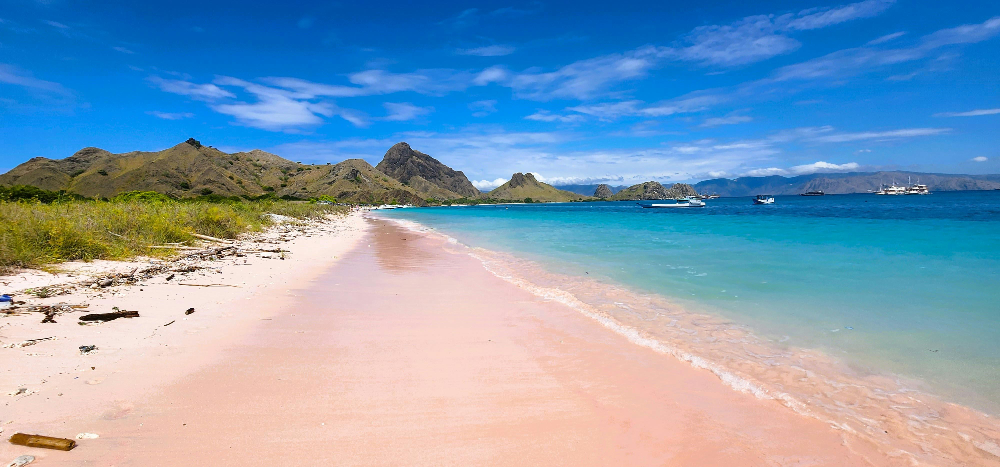

Profil Pink Beach

Tentang Pink Beach
Pink Beach atau Pantai Merah adalah pantai yang terletak di sisi tenggara Pulau Komodo, Taman Nasional Komodo, Nusa Tenggara Timur, Indonesia. Pantai ini merupakan salah satu dari hanya 7 pantai berpasir merah muda yang ada di seluruh dunia.
Keunikan
Warna pink pada pasir pantai berasal dari organisme mikroskopis bernama Foraminifera yang hidup di terumbu karang merah. Pecahan karang merah bercampur dengan pasir putih sehingga menghasilkan warna merah muda yang khas dan unik.
Informasi Umum
| Nama | : Pink Beach / Pantai Merah |
| Lokasi | : Pulau Komodo, Taman Nasional Komodo, NTT |
| Status | : Kawasan Dilindungi UNESCO |
| Akses | : Perahu dari Labuan Bajo (~3 jam) |
| Jam Buka | : 07.00 - 17.00 WITA |
| Tiket | : Termasuk tiket Taman Nasional Komodo |
Aktivitas
- Snorkeling & Diving
- Berenang
- Hiking ke Viewpoint (5-10 menit)
- Fotografi & Drone
- Island Hopping
- Liveaboard
Tips Berkunjung
- Datang sebelum jam 09.00 untuk menghindari keramaian
- Bawa bekal sendiri, tidak ada warung di pantai utama
- Pakai sunscreen reef-safe dan topi
- Dilarang membawa pulang pasir atau koral
- Waktu terbaik: April - November (musim kemarau)